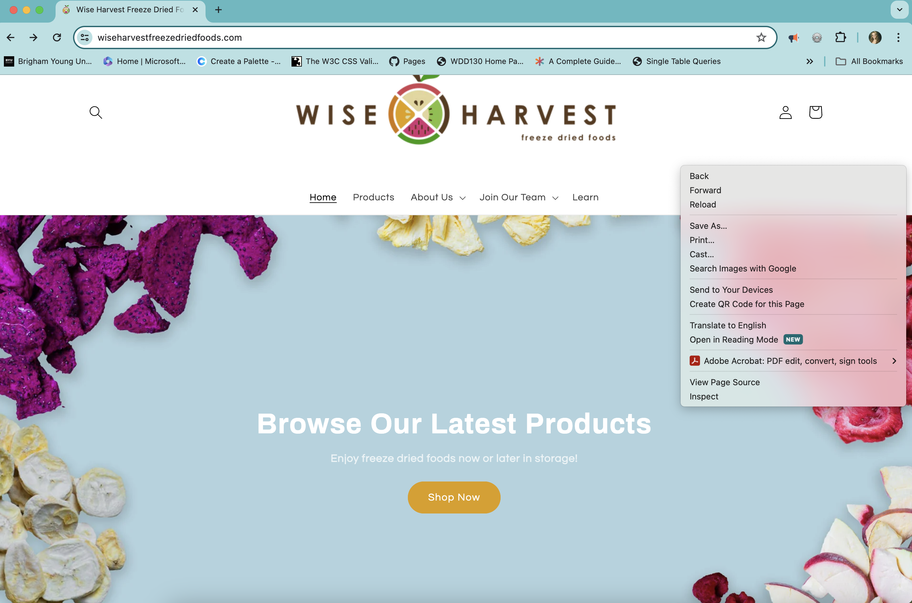
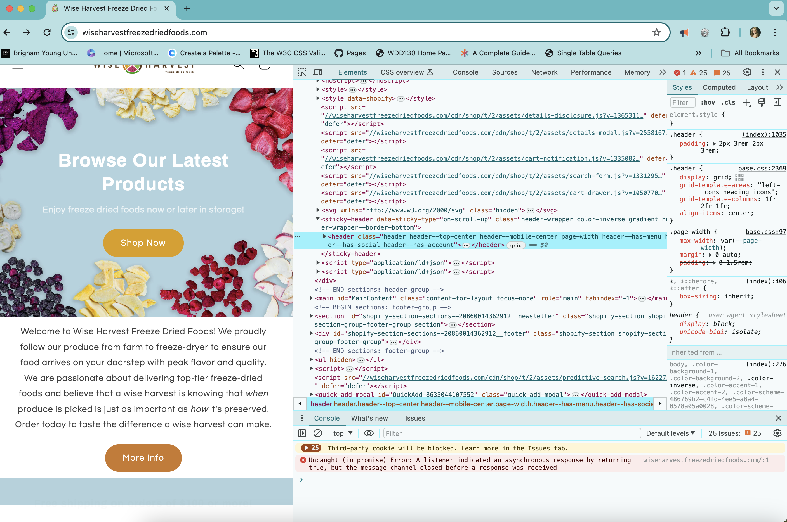

What are Develper Tools?
Devtools allow you to inspect,test, and debug code on a browser that will impact the user interface. You will work with HTML, CSS, and JavaScript on Chrome Developer Tools.
Anyone can use devtools to see how the code manipulates the website. Those changes will only appear on your browser until you refresh your page. The devtools help you to identify changes that will need to be made. The permanent changes will have to be made on the back end.
How do you open Chrome Developer Tools?
1- Right-click on the webpage that you are wanting to inspect.
2- The Chrome Devtools will open.
3- Click on each tab to access the different tools.
4- When you are done exploring the tools you can click in the X in the top right corner.